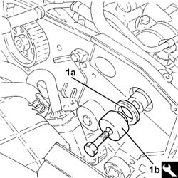

1036L30 FRONT OIL SEAL OF INTAKE CAMSHAFT IN CYLINDER HEAD EXTENSION REPLACE
- Path
- Procedures > 10 ENGINE UNIT > 1036 TIMING SYSTEM > 1036L CAMSHAFT (2) IN TOP HEAD (1) > 1036L30 FRONT OIL SEAL OF INTAKE CAMSHAFT IN CYLINDER HEAD EXTENSION REPLACE
- Kind
- repair procedure (removal / refitting; the operation number is the code)
- Applies to
- engines: 1.9 JTD 16V; all production periods
- Interactive page
- https://sloeber94.github.io/elrnDB-aGt/en/#/125000997
Applies to: engines: 1.9 JTD 16V; all production periods
 Removing
Removing
 Refitting
RefittingProceed with removal
Op. 1008C10 POWER UNIT UPPER REACTION LINK R R
Proceed with removal
Proceed with removal
Op. 1060G80 DS ELECTRIC INJECTION CONTROL UNIT - R R
Proceed with removal
Proceed with removal
Op. 4450B04 RIGHT FRONT WHEEL R R
Proceed with removal
Proceed with removal
Op. 7055B54 UNDER-ENGINE GUARD - R R
Proceed with removal
Proceed with removal
Op. 7055B91 RIGHT FRONT WHEEL ARCH LINER - R.R.
Proceed with removal
Proceed with removal
Op. 1092G10 SINGLE ENGINE BELT R R
Remove the front camshaft oil seal, exhaust side.
Op. 1092A10 CRANKSHAFT SERVICES PULLEY - R.R.
Op. 1092G20 ENGINE COMPONENT SINGLE BELT FIXED TENSIONER - ONE - R + R
Op. 1032D12 TIMING SYSTEM PROTECTIVE COVER(S) - R + R
Op. 1032B10 TOOTHED TIMING BELT - R + R FOR TIMING ADJUSTMENT OR REPLACEMENT
Op. 1032B40 TOOTHED-DRIVEN PULLEY (ONE) - R + R WITH TIMING BELT REMOVED
Applies to: engines: 1.9 JTD 16V; all production periods
Refitting
Removing1. Fit a new front camshaft oil seal, exhaust side (1a) using the tool (1b).
 | Name | Country |
|---|---|---|
1b | Fitting tool | 1.870.896.800 |

Applies to: engines: 1.9 JTD 16V; all production periods
Proceed with refitting
Op. 1032B40 TOOTHED-DRIVEN PULLEY (ONE) - R + R WITH TIMING BELT REMOVED.
Proceed with refitting
Op. 1032B10 TOOTHED TIMING BELT - R + R FOR TIMING ADJUSTMENT OR REPLACEMENT.
Proceed with refitting
Op. 1032D12 TIMING SYSTEM PROTECTIVE COVER(S) - R + R.
Proceed with refitting
Op. 1092G20 ENGINE COMPONENT SINGLE BELT FIXED TENSIONER - ONE - R + R.
Proceed with refitting
Op. 1092A10 CRANKSHAFT SERVICES PULLEY - R.R..
Proceed with refitting
Op. 1092G10 SINGLE ENGINE BELT R R.
Proceed with refitting
Op. 7055B91 RIGHT FRONT WHEEL ARCH LINER - R.R..
Proceed with refitting
Op. 7055B54 UNDER-ENGINE GUARD - R R.
Proceed with refitting
Op. 4450B04 RIGHT FRONT WHEEL R R.
Proceed with refitting
Op. 1060G80 DS ELECTRIC INJECTION CONTROL UNIT - R R.
Proceed with refitting
Topics linked from this page (11)
- 1008C10 POWER UNIT UPPER REACTION LINK R R
- 1032B10 TOOTHED TIMING BELT - R + R FOR TIMING ADJUSTMENT OR REPLACEMENT
- 1032B40 TOOTHED-DRIVEN PULLEY (ONE) - R + R WITH TIMING BELT REMOVED
- 1032D12 TIMING SYSTEM PROTECTIVE COVER(S) - R + R
- 1060G80 DS ELECTRIC INJECTION CONTROL UNIT - R R
- 1092A10 CRANKSHAFT SERVICES PULLEY - R.R.
- 1092G10 SINGLE ENGINE BELT R R
- 1092G20 ENGINE COMPONENT SINGLE BELT FIXED TENSIONER - ONE - R + R
- 4450B04 RIGHT FRONT WHEEL R R
- 7055B54 UNDER-ENGINE GUARD - R R
- 7055B91 RIGHT FRONT WHEEL ARCH LINER - R.R.